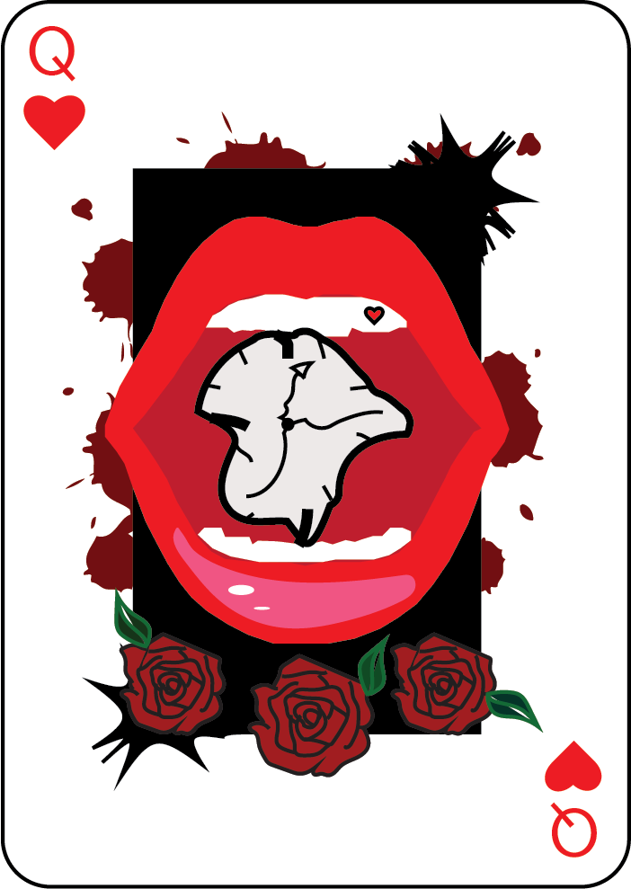

Welcome to Mallory's resume page! Mallory is a part time student at Seminole State College and is currently studying the wonderful world of Graphic Design. Mallory has been learning and developing skills in many Adobe products and has even taken her learning further outside of school. She has a fresh new look at the graphic design industry and is always pushing herself to learn more. She's also going outside just the graphics and learning film and photography, all of which help her in the long run to becoming more diverse and valuable in a work setting.